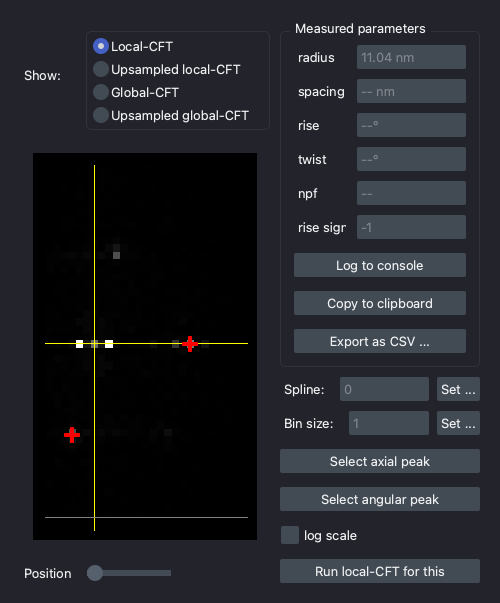
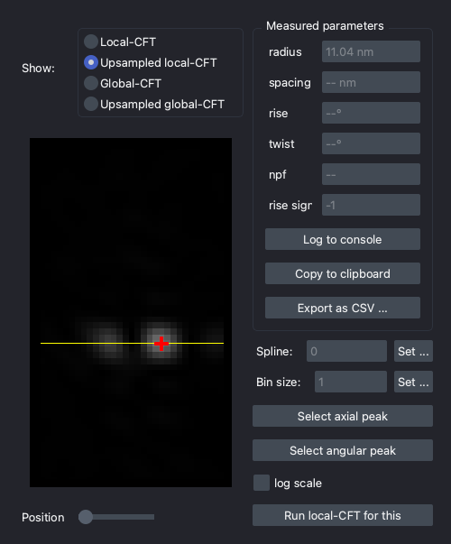
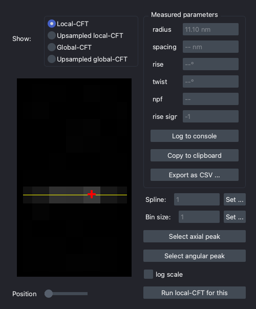

Inspect CFT Results
To clarify if the analysis is done correctly or to determine the parameters, you may sometimes want to inspect the results of the CFT. This can be done by the spectra inspector widget.
GUI: Analysis > Open spectra inspector or Ctrl+K → Ctrl+V
In this window, you can see the local- and global-CFT power spectra of the existing splines, and the estimated peak positions (red markers) if available. You can change the current spline and bin size for inspection in this GUI.

The upsampled local-CFT is useful to check the sub-pixel peak positions.

If the spline is not well fitted to the image, the peaks of the local power spectrum are blurred, especially in the x (angular) direction.

Note
This widget is also used to measure the lattice parameters of unknown structures. See here for more information.